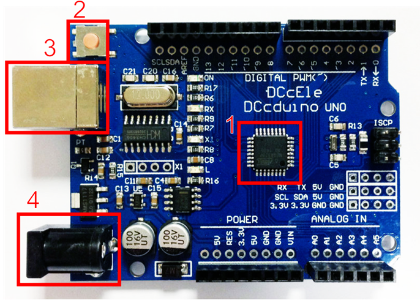

Плата Ardion UNO та її особливості
Мета: Ознайомитися з характеристиками та роботою мікроконтролера Arduino Uno.
Arduino – апаратна обчислювальна платформа, основними компонентами якої є плата вводу/виводу та середовище розробки на мові Processing/Wiring.
Arduino застосовується для створення електронних пристроїв з можливістю отримання сигналів від різних керуючих елементів (сенсори, кнопки тощо) і управління різними виконавчими пристроями (лампочки, двигуни тощо).
Оригінальні плати Arduino виробляються фірмою SmartProjects. На даний момент доступно 20 версій плат, які різняться характеристиками мікроконтролера та кількістю аналогових і цифрових виводів.
Найпопулярнішою версією Arduino є Arduino Uno (рис. 1), який побудований на основі мікроконтролера ATmega328P фірми Atmel (1 на рис. 1).

Основні характеристики плата Arduino Uno
Характеристики Arduino Uno
| Параметр | Значення |
|---|---|
| Робоча напруга | 5 В |
| Вхідна напруга (рекомендована) | 7-12 В |
| Вхідна напруга (гранична) | 20 В |
| Кількість цифрових входів/виходів | 14 (6 з них можуть бути в ролі ШІМ) |
| Кількість аналогових входів/виходів | 6 |
| Постійний струм через вхід/вихід | 40 мА |
| Постійний струм для виходу 3.3V | 50 мА |
| Флеш-пам’ять (0,5 Кб використовуються для завантажувача) | 32 Кб (ATmega328P) |
| ОЗП | 2 Кб (ATmega328P) |
| Тактова частота | 16 МГц |
Згідно з наведеними параметрами, напруга зовнішнього джерела живлення може бути в межах від 6 до 20 В, однак, рекомендується використовувати джерело живлення з напругою в діапазоні від 7 до 12 В, адже нижче 7 В напруга на виводі 5V знизиться і це може стати причиною нестабільної роботи пристрою, більше 12 В може викликати перегрів стабілізатора напруги вихід плати з ладу.
Контакти живлення (POWER):
- VIN
- Напруга, що надходить в Arduino безпосередньо від зовнішнього джерела живлення (не пов'язане з 5В від USB або іншим стабілізованою напругою). Через цей вивід можна як подавати зовнішнє живлення, так і споживати струм, коли пристрій живиться від зовнішнього адаптера.
- 5V
- На цей роз'єм надходить напруга 5В від стабілізатора напруги, незалежно від того, як живиться пристрій: від адаптера (7 - 12В), від USB (5В) або через вивід VIN (7 - 12В).
- 3.3V
- 3.3В, що надходять від стабілізатора напруги. Максимальний струм, споживаний від цього виводу, становить 50 мА.
- GND
- Вивід землі – загальний контакт.
Danger
Живити пристрій через виводи 5V або 3V3 не рекомендується, оскільки в цьому випадку не використовується стабілізатор напруги, що може привести до виходу плати з ладу.
Цифрові та аналогові входи і виходи
На відміну від людей, комп'ютери працюють та спілкуються за допомогою двох символів: «1» та «0». Це те, що називається цифровими сигналами. Використовуючи комбінації цих двох символів, цифрові машини можуть представляти практично все у Всесвіті
- D2 ... D13
- Цифрові входи/виходи дають можливість приймати або подавати низьку чи високу напругу. Низька напруга (
LOWабо0) означає що на цьому піні напруга становить близько 0 вольт. Висока напруга (HIGH,1) означає що на піні близько 5 вольт. - A0 ... A5
- Аналогові входи можуть приймати значення напруги не тільки
0або1. Вони дають змогу зчитувати і проміжні значення від 0 до 5 вольт присвоївши значення напрузі від0до1023поділок.
Переведення поділок в напругу
Тобто якщо з порту отримуємо значення 1023 то це означає, що на вході напруга 5 В, тоді за пропорцією завжди можна визначити напругу \(V_A\), знаючи значення на вході AX:
$$
V_A = \frac{5}{1023} \cdot AX \tag{1.1}
$$
- ШІМ контакти
- На контакти позначені
~(для Arduino Uno цеD3,D5,D6,D9,D10,D11) можуть подаватися значення від0до255.
Широтно-імпульсна модуляці
- це процес керування шириною (тривалістю) імпульсів.